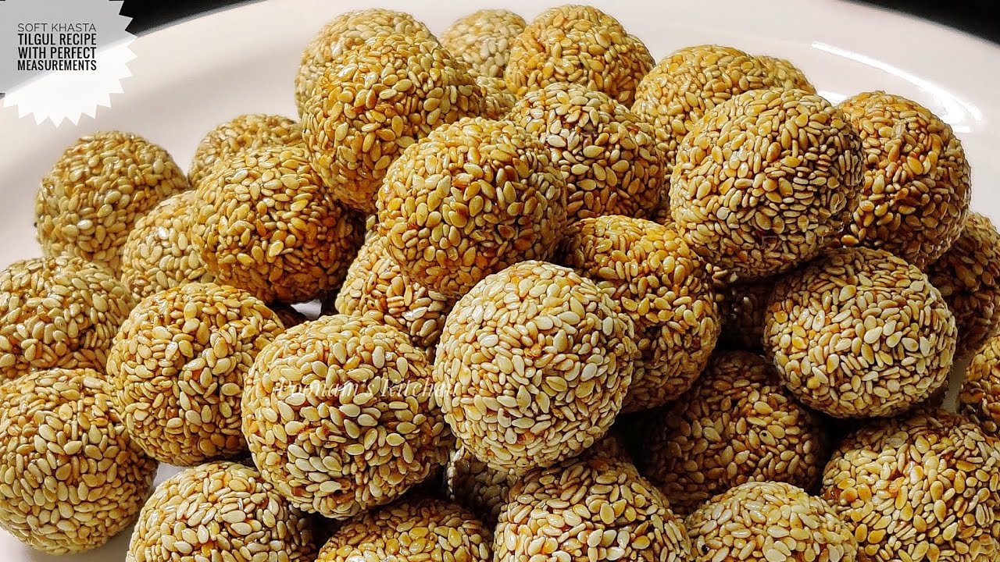

How to make Tilgul

Description:-
Til Ladoo or Tilgul Ladoo or Sesame Seed Ladoo is a Sankranti special sweet from Maharashtra. A traditional sweet
made with sesame and jaggery to heat the body during the winter months.
Ingredients of Tilgul:-
- Sesame seeds (white) - 1 cup
- Jaggery - ¾ cup
- Cardamom powder - ¼ teaspoon (optional)
- Ghee - 2 teaspoon plus a little to grease the palm
Directions:-
- Heat a heavy bottom pan and add the sesame seeds to it. Roast the seeds for few minutes in low heat until it slightly changes color and becomes aromatic. You will also notice that the seeds start crackling at this stage.
- Remove the roasted sesame seed on a plate and in the same pan, add the ghee and jaggery. I used a good quality paagu vellam (jaggery perfect to make syrup) to make the ladoo.
- Once the jaggery dissolves and starts to bubble up, cook it for 2 minutes until it forms a soft ball stage. This is a stage when a small drop of syrup is poured in cold water, it forms a soft ball when rolled between fingers.
- Reduce the flame to low and add the roasted sesame seeds to the syrup. Mix well and remove from flame.
- Remove the mixture in a bowl and let it cool down a little.
- Grease your palm with ghee and start making small balls with the mixture. Do not wait until the mixture cools down completely or else it will be hard to make balls.
- Store them in a airtight container.
Back To Main Page